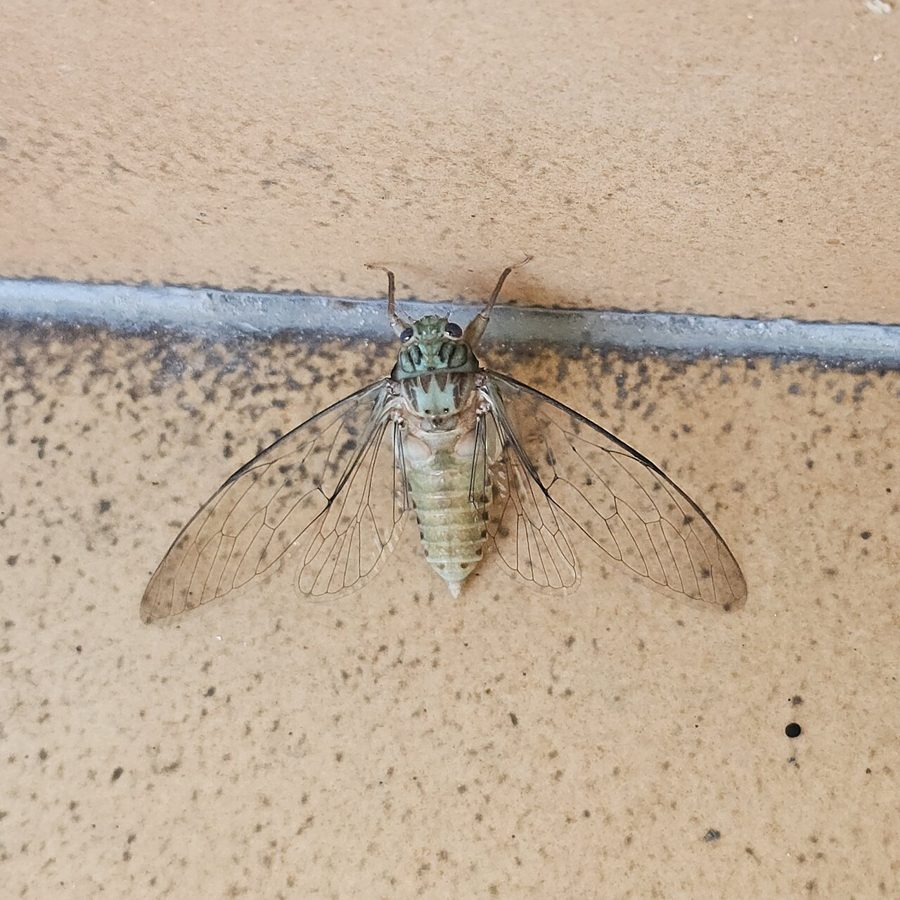

डोहर्टीज सिकाडाDoherty's Cicada
Lahugada dohertyi · Cicadidae · INS-0297

- Scientific name वैज्ञानिक नाम
- Lahugada dohertyi (Distant, 1891)
- Family कुल
- Cicadidae
- Hindi हिंदी
- डोहर्टीज सिकाडा
- Local names स्थानीय नाम
- summer clicker, dohertys cicada
- Status here यहाँ की स्थिति
- native
- Movement आवागमन
- Resident, here all year
- Known from कहाँ दर्ज
- Others have published records from the wider Awadh–Purvanchal plain, none yet from Basti–Ayodhya अवध–पूर्वांचल से दूसरों के प्रकाशित अभिलेख, बस्ती–अयोध्या से अभी नहीं
- IUCN IUCN
- not evaluated
- Review समीक्षा
- not yet reviewed
When to look कब देखें
Expected mainly in May, June, July, August. मुख्यतः मई, जून, जुलाई, अगस्त में अपेक्षित।
Tell it apart from इनसे अलग पहचानें
डोहर्टीज सिकाडा / Doherty's Cicada
Lahugada dohertyi (Distant, 1891) — Cicadidae
डोहर्टीज सिकाडा (समर क्लिकर) — गर्मी और बरसात के महीनों में पेड़ों के तनों से तीखी झनकार निकालने वाला एक बड़ा सिकाडा, जिसे प्रकाशित साहित्य में 'समर क्लिकर' भी कहा जाता है।
Quick Identification त्वरित पहचान
| Feature | Description |
|---|---|
| Coloration | Dark ochraceous to chestnut-brown with subtle fuscous markings |
| Head | Broad, dark ochraceous; dark around prominent ocelli and eye margins |
| Pronotum | Ochraceous with faint central dark stripe and fuscous lateral incisures |
| Mesonotum | Marked with two central obconical spots and black dots near cruciform elevation |
| Wings | Completely clear, hyaline, tinged with bronzy sheen; unspotted veins |
| Sound | Loud, piercing, rhythmic clicking and buzzing call produced by male timbals |
Field tip: Found perched vertically on tree trunks in shady groves; betrayed by loud rhythmic acoustic calling during hot summer afternoons.
हिंदी: गहरा बादामी-भूरा शरीर, कांच जैसे बिल्कुल पारदर्शी चमकीले पंख और दोपहर में पेड़ों से निकलने वाली तेज झनकार इसकी पहचान है।
Morphology आकारिकी
Measurement not available in consulted sources.
A robust, medium-large cicada with a solid, wedge-shaped body colored dark ochraceous, tawny, and castaneous brown. The head is broad, somewhat shorter than the pronotum, dark ochreous with fuscous shading around the prominent ocelli and along the lateral margins of the vertex. The compound eyes are large, globular, and positioned at the outer lateral angles of the head. The three ocelli form a neat triangle on the vertex. Antennae are small, bristle-like, and setaceous.
The pronotum is transverse, dark ochraceous, with a subobsolete dark median stripe flanked by dark spots at base and apex, and fine fuscous grooves along the oblique incisures. The mesonotum is broad, adorned with two central obconical dark spots, faint lateral fasciae, and two small blackish spots positioned directly in front of the cruciform elevation (wing anchor).
The wings are completely transparent and glassy (hyaline), with a delicate bronzy sheen under direct sunlight, completely unspotted, with dark ochraceous or brownish venation. The male possesses prominent acoustic organs: large timbals located dorsolaterally on the first abdominal segment, covered by opercula on the underside. The legs are sturdy, dark ochraceous with dark tarsal claws; fore-femora are thickened and armed with strong ventral spines.
हिंदी: इसका शरीर गठीला और मजबूत होता है। सिर चौड़ा, छाती पर गहरे निशान और पंख पूरी तरह पारदर्शी होते हैं जिनमें कोई धब्बा नहीं होता।
Behaviour & Ecology व्यवहार और पारिस्थितिकी
Lahugada dohertyi is an arboreal, diurnal acoustic insect that spends its adult life high in the tree canopy or resting camouflaged against tree bark. Adults emerge in May and June as pre-monsoon heat peaks, and their calling continues through the rainy season into August (Sarkar 2019).
Males call from high on vertical tree trunks, producing a distinctive, loud acoustic signal composed of rhythmic clicking sounds accelerating into a sustained shrill buzz. The sound is generated by the rapid deformation of internal ribbed timbal membranes actuated by massive timbal muscles. Both sexes feed by inserting their piercing-sucking rostrum into tree bark to tap xylem sap. Flight is fast, direct, and undulating between tree trunks.
हिंदी: यह पेड़ों की छाल पर सीधा चिपककर बैठता है। नर सिकाडा अपनी खास झिल्ली को हिलाकर कान फाड़ने वाली तीखी आवाज़ निकालते हैं।
Life Cycle / Phenology जीवन चक्र
The life cycle is long and predominantly subterranean. After mating in the canopy, the female uses her strong serrated ovipositor to make slits into dead or living tree twigs, inserting clusters of slender eggs.
Upon hatching, the minute nymphs drop to the forest floor, burrow immediately into the soil, and locate tree roots. Nymphs live underground for multiple years, feeding on root xylem fluid and passing through several instars. In the final instar, the nymph digs an exit tunnel to the surface using specialized fossorial forelegs, climbs a nearby tree trunk at dusk, and molts into the winged adult, leaving behind a brown, hollow exuvia clinging to the bark.
हिंदी: इसका अधिकांश जीवन जमीन के नीचे जड़ों के पास बीतता है। कई सालों बाद अंतिम अवस्था में यह जमीन से निकलकर पेड़ पर चढ़ता है और केंचुल छोड़कर उड़ जाता है।
Host Plants or Prey आहार
Xylophagous sap feeder. Nymphs underground and adults on tree trunks feed on xylem fluid of broadleaf trees. Co-occurs in woodland canopies with other cicadas including Platypleura capitata.
हिंदी: यह बड़े छायादार पेड़ों के तनों और जड़ों का रस पीकर जीवित रहता है।
Predators / Natural Enemies शत्रु
Adult cicadas are a rich food source for insectivorous birds. Kingfishers, black drongos, shikras, and tree pies actively hunt singing cicadas by tracking their calls. Arboreal garden lizards (Calotes versicolor) stalk them on tree trunks, while cicada-killer wasps (Sphecidae) paralyze adults to provision underground larval cells. Subterranean nymphs are consumed by moles, shrews, and root-foraging beetles.
हिंदी: भुजंगे, कौवे, शिकरा और गिरगिट आवाज़ सुनकर इसे ढूंढते हैं और खा जाते हैं। जमीन के अंदर इसके बच्चों को छछूंदरें खाती हैं।
Agricultural / Human Relevance कृषि प्रासंगिकता
Lahugada dohertyi does not cause significant economic damage to fruit orchards or timber plantations. Oviposition slits can cause minor dieback of delicate terminal twigs ("flagging"), but tree health is unaffected.
हिंदी: यह बागानों को कोई गंभीर नुकसान नहीं पहुंचाता।
Expected Locally स्थानीय रूप से अपेक्षित
Not a field record. Written from published accounts for eastern Uttar Pradesh. No confirmed local sighting yet — if you have seen it, that is what the atlas needs.
अभी तक स्थानीय पुष्टि नहीं। यह विवरण प्रकाशित स्रोतों से है, किसी अवलोकन से नहीं।
GBIF holds published records from the wider Awadh–Purvanchal plain, none yet from Basti–Ayodhya. Expected in older mango orchards, riverine groves along the Kuwana and Manwar rivers, and remnant woodland patches across the district. Listen during hot afternoons in June and July for a loud clicking call from the treetops; inspect tree trunks at eye level for perched adults or empty nymphal skins. A first record would be a photograph of the adult with place and date, sent through the About page.
Distribution वितरण
Global range: Recorded from northern and northeastern India, Nepal, and adjacent Himalayan foothill woodlands.
In India: Documented from Assam, West Bengal, Bihar, and the terai-bhabar and Gangetic tracts of Uttar Pradesh.
In Uttar Pradesh: Recorded from forested terai tracts and older woodland groves in eastern Uttar Pradesh.
In Basti district / eastern UP: Expected in mature orchards and riverside woodland remnants throughout Basti, Harraiya, and Ayodhya borders.
हिंदी: यह उत्तरी और पूर्वी भारत के वनों में पाया जाता है। उत्तर प्रदेश के तराई और पुराने बागानों में इसका फैलाव है।
Research Questions शोध प्रश्न
- What is the subterranean nymphal development duration of Lahugada dohertyi in Gangetic alluvium soils?
- How does the acoustic structure of the male call differ from the common Platypleura capitata found in the region?
- Which tree species in eastern UP provide the primary oviposition sites and nymphal root hosts?
- क्या बस्ती जनपद के पुराने आम के बगीचों में इस सिकाडा की मौजूदगी पेड़ों के स्वास्थ्य को प्रभावित करती है?
- क्या जलवायु परिवर्तन और बढ़ते तापमान से सिकाडा के बाहर निकलने का समय बदल रहा है?
Similar Species मिलती-जुलती प्रजातियाँ
| Species | Key Difference | हिंदी | |
|---|---|---|---|
| Platypleura capitata ([[cicada | Cicada]]) | Wings opaque and mottled with brown and white patterns; body more compact; different buzzing call | चितकबरा सिकाडा |
| Cryptotympana spp. (Black Cicada) | Much larger; jet-black body; darker wings; emerges primarily in dense sal forests | काला सिकाडा | |
| Dundubia spp. (Green Cicada) | Pale emerald green to olivaceous body; completely green opercula covering underside | हरा सिकाडा |
Field rule: Ochraceous to castaneous body, completely clear glassy wings with a subtle bronzy sheen and unspotted veins, and rhythmic clicking call = Lahugada dohertyi.
Taxonomy & Classification वर्गीकरण
Original description. Described by William Lucas Distant (1891) in A Monograph of Oriental Cicadidae, part 4, pp. 49–96, pl. 13, fig. 9, under the name Pomponia dohertyi. Distant named the species in honor of William Doherty, the renowned American entomological collector who secured specimens in Margherita, Assam. Distant (1906) subsequently erected the genus Lahugada to accommodate the species.
Subspecies. Monotypic — no subspecies are recognized.
Family and order placement. Order Hemiptera, suborder Auchenorrhyncha, infraorder Cicadomorpha, superfamily Cicadoidea, family Cicadidae (cicadas), subfamily Cicadinae.
IUCN status rationale. Not evaluated. Woodland species with stable populations across northern and eastern India.
हिंदी: इसे 1891 में डिस्टेंट ने Pomponia dohertyi नाम दिया था, बाद में इसे Lahugada जीनस में शामिल किया गया। यह सिकाडिडी परिवार का कीट है।
Photo Gallery फोटो गैलरी
No photos yet — add field photos to media/species/dohertys_cicada/ and run node scripts/sync_photos.js.
Photos needed आवश्यक फोटो
- [ ] Adult on tree trunk showing ochraceous body and transparent wings (पेड़ के तने पर बैठे सिकाडा की तस्वीर)
- [ ] Empty nymphal exuvia attached to tree bark after emergence (पेड़ पर चिपकी सिकाडा की केंचुल की तस्वीर)
References संदर्भ
- Distant, W. L. (1891). A Monograph of Oriental Cicadidae. Part 4. West, Newman & Co., London, pp. 49–96, pl. 13. (as Pomponia dohertyi).
- Distant, W. L. (1906). The Fauna of British India, Including Ceylon and Burma: Rhynchota. Vol. 3 (Heteroptera–Homoptera). Taylor and Francis, London, pp. 121–122. (as Lahugada dohertyi).
- Sarkar, V. (2019). A note on the taxonomy and natural history of the Summer Clicker Lahugada dohertyi (Distant, 1891) (Insecta: Hemiptera: Cicadidae) along with its distribution in northern West Bengal, India. Journal of Threatened Taxa, 11(9), pp. 14128–14136. doi:10.11609/jott.3193.11.9.14128-14136
- GBIF Occurrence Data — Lahugada dohertyi, India (2025).
Source file: species/fauna/insects/dohertys_cicada.md